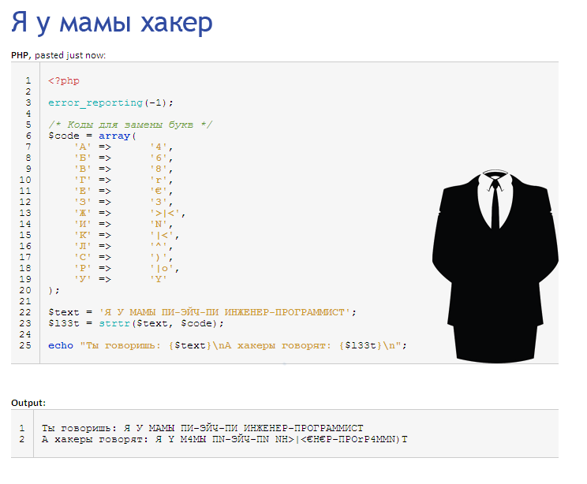
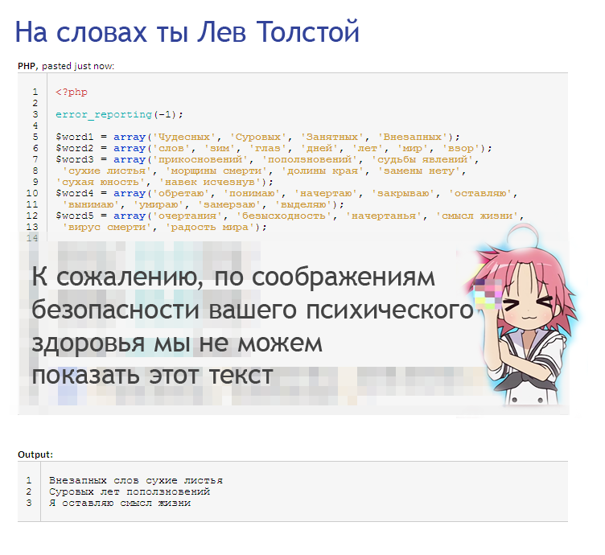
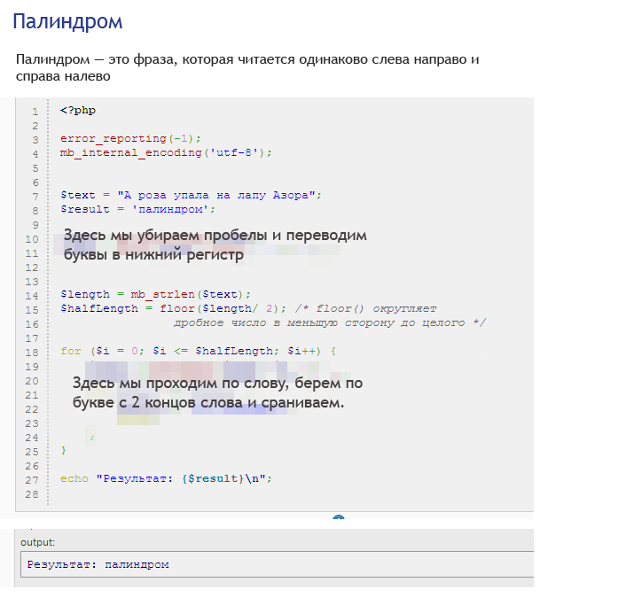

Подробности, как всегда, в официальном мануале:
На некоторых сайтах для выполнения PHP кода не установлено расширение mbstring,
не работают mb-функции (вроде mb_strlen()),
и из-за этого программа завершается с ошибкой вроде:
PHP Fatal error: Uncaught Error: Call to undefined function mb_strlen() in /home/1MjNqg/prog.php:3
В этом случае можно использовать какой-нибудь другой сервис для выполнения кода, например http://sandbox.onlinephpfunctions.com/ , https://repl.it/languages/php или http://phptester.net/ .
Также, ты можешь установить PHP себе на компьютер и запускать код у себя, вот краткая инструкция: https://github.com/codedokode/pasta/blob/master/soft/php-install.md
Представь, что ты секретный агент в тылу врага (кто будет врагом — придумай сам). Ты решил воспользоваться полученными в уроках знаниями для создания программы шифрования и расшифровки текста. На картинке ты видишь набросок такой программы.
Ссылка: http://codepad.org/DUbYE5tP
Если ты когда-нибудь видел хакеров (например, в кино или в интернете), то знаешь, что у них есть свой, особый язык, который позволяет отличать своих от чужих. Он называется l33tspeak, и объяснен в википедии: http://en.wikipedia.org/wiki/Leet (как видишь, википедисты обладают элитными знаниями).
Чем мы хуже хакеров? Давай напишем программу для перевода текста на элитный язык. Опять же, воспользуемся массивом перекодировки и функцией strtr
Задачка: доделай программу по ссылке http://codepad.org/5XEkSKHI для перевода текста на l33tspeak. Покажи нам результат.
А на деле — Курт Кобейн. Давно прошли те времена, когда, чтобы сотворить шедевр, надо было мучительно сидеть в размышлениях перед листом бумаги. Сегодня, с развитием информационных технологий, банальную задачу творчества легко решит компьютер и интерпретатор языка PHP. А мы ему в этом поможем.
На картинке — часть программы, создающая философское настроение. Принцип работы таков: есть 5 наборов слов, из которых случайно выбираются слова, образуя такую структуру:
> слово1 слово2 слово3
> слово1 слово2 слово3
> Я слово4 слово5
Задание
Ссылка на исходные данные: http://codepad.org/yIDYMDIR
Подсказка: так как первая и вторая строка формируются по одинаковому принципу, то незачем копировать код 2 раза, можно использовать цикл из 2 шагов.
Подсказка: можно упростить программу, сделав что-то вроде
шаблона для генерации стиха на основе массива. В каждый элемент массива мы кладем
массив вариантов слова или строки, из которого надо сделать выбор:
[$word1, $word2, $word3, ["\n"], ...]. Мы добавляем массив с
"\n", чтобы в нужном месте вывелся перевод строки. Остается только
пройти по массиву циклом и сгенерировать стих..
Для этого есть хитрый хак:
$string = 'Кот';
$letters = preg_split('//u', $string, null, PREG_SPLIT_NO_EMPTY);
var_dump($letters); // Массив ['К', 'о', 'т'];
Чтобы понять, как он работает, надо изучить регулярные выражения (скоро-скоро).
Палиндром — это строка, которая читается как слева направо, так и справа налево, например «А роза упала на лапу Азора» или «Аргентина манит негра». Большие/маленькие буквы, пробелы между словами — не имеют значения. Больше информации про палиндромы в вики: http://ru.wikipedia.org/wiki/Палиндром.
Задание
Подсказка: сначала мы переводим строку в нижний регистр, чтобы не было разницы, большая буква или маленькая, потом вырезаем из нее пробелы. После этого мы проходим от края до середины посимвольно, на каждом шаге берем по 1 символу с начала и конца строки и сравниваем. Если они не совпали — строка не палиндром, и мы заканчиваем программу. Если все символы совпали — ура, это палиндром!
Ах да, еще один совет. В интернете тебе могут посоветовать решать задачу через strrev() (которая не работает с многобайтными кодировками и русскими буквами и про которую я советую сразу забыть). Вот как надо поступать с такими «советчиками»:
-----
Куда вводить код? Что надо скачать? Читай первый урок.
Есть вопросы? Задай гуглу или автору.
Нравится урок? Лайкай, репости, приглашай друзей, пости котов и Канако, шли добра, решай задачи, помогай новичкам! Кнопок для лайка нет, кто хочет зарепостить, всегда может сделать это ручками.
Как связаться с автором? Я хочу переодеть его в платье школьницы и жениться на нем. Ящик codedokode (кот) gmail.com ждет ваших писем. А вконтактик и фейсбучек ждут ваших лайков. Но ответ на банальные вопросы лучше искать в Гугле или на stackoverflow.
Я решил задачку!!! Молодец, делай следующий урок
Ideone не работает!11 Ну так открой Гугл и найди сайты вроде https://repl.it/languages/php , http://phptester.net/ , http://sandbox.onlinephpfunctions.com/ , http://codepad.org/ или http://www.runphponline.com/ . Не ленись.
Почему так много рекламы? Всю рекламу на сайте ставит юкоз (бесплатный хостинг же), а не я.
На сайте установлена система Google Analytics (и еще несколько аналогичных систем от юкоза). Данные о твоем IP-адресе, посещаемых страницах, времени посещения отправляются в Google Corporation, США. Хочу знать, кто и зачем сюда заходит. Поверь, другие сайты делают точно так же. Все сайты пишут логи.